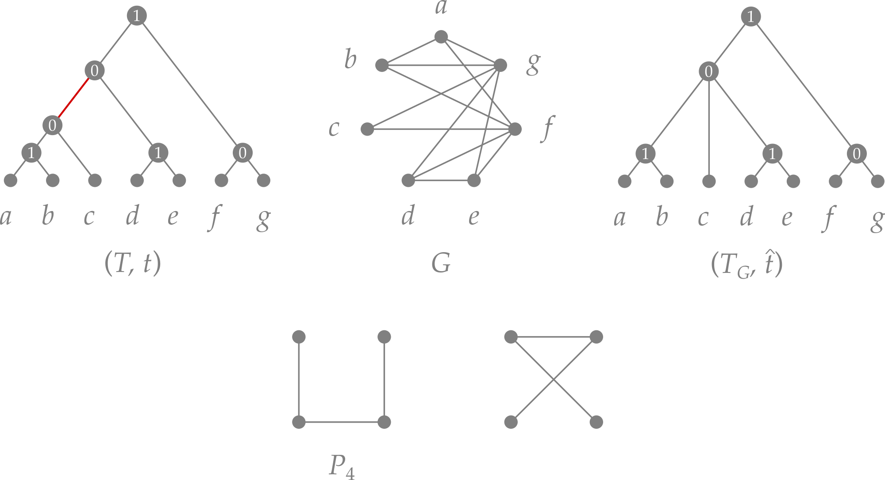

Cographs¶
Background¶
Definition¶
Cographs (short for complement-reducible graphs) are a well-studied class of undirected graphs built from single-vertex graphs by recursive application of two operations:
- the disjoint union \(G = H \mathbin{\dot\cup} H'\), and
- the join \(G = H \Join H'\), which is the disjoint union plus all edges between \(H\) and \(H'\).
Formally, a graph \(G\) is a cograph if
- \(G\) is a single vertex \(K_1\),
- \(G = H \mathbin{\dot\cup} H'\) is the disjoint union of two cographs \(H\) and \(H'\), or
- \(G = H \Join H'\) is the join of two cographs \(H\) and \(H'\).
An equivalent, and often more useful, characterisation is that cographs are exactly the \(P_4\)-free graphs, i.e., graphs that contain no induced path on four vertices. Further equivalent conditions include: every connected induced subgraph has diameter at most 2, and every induced subgraph is itself a cograph (the class is hereditary).
Cotree representation¶
The recursive construction uniquely defines a rooted tree \((T, t)\) called the cotree, where
- the leaves of \(T\) are the vertices of the cograph \(G\), and
- each inner vertex \(u\) carries a label \(t(u) \in \{\texttt{parallel},\texttt{series}\}\) indicating whether the children of \(u\) are combined by disjoint union (\(\texttt{parallel}\)) or by join (\(\texttt{series}\)).
The edge set of \(G\) is completely determined by the cotree \((T, t)\): two vertices \(x\) and \(y\) are adjacent if and only if
The cograph \(G[u]\) represented by the subtree rooted at \(u\) is given recursively by
Because both operations are associative, the cotree is not necessarily binary. Contracting all inner edges \(uv\) with \(t(u) = t(v)\) yields the discriminating cotree \((T_G, \hat{t})\), which is uniquely determined by \(G\).

Top row: Example for a cograph \(G\) and a corresponding cotree \((T,t)\), where \(\texttt{parallel}=0\) and \(\texttt{series}=1\). The unique discriminating cotree \((T_G,\hat{t})\) is obtained from \((T,t)\) by contraction of the edge that is highlighted in red. Bottom row: The \(P_4\) is the characteristic forbidden induced subgraph of cographs. Its complement (drawn on the r.h.s.) is again a \(P_4\).
In tralda, inner vertices of a cotree are labeled with the strings "series" and "parallel";
leaf labels hold the corresponding vertex identifiers of the cograph.
Module overview¶
All cograph functionality is provided by tralda.cograph:
from tralda.cograph import (
# cotree ↔ graph conversion
to_cograph, to_cotree,
# cotree manipulation
complement_cograph, random_cotree,
# optimisation on cographs
cluster_deletion, complete_multipartite_completion,
# editing
edit_to_cograph, CographEditor,
)
| Function / class | Input | Complexity | Notes |
|---|---|---|---|
to_cotree |
graph | \(O(\lvert V\rvert + \lvert E\rvert)\) | returns None if not a cograph |
to_cograph |
cotree | \(O(\lvert V\rvert^2)\) in the worst case | reconstructs the graph |
complement_cograph |
cotree | \(O(\lvert V\rvert)\) | swaps "series" / "parallel" labels |
random_cotree |
\(n\) | \(O(n)\) | generates a uniformly random cotree |
cluster_deletion |
cograph or cotree | \(O(\lvert V\rvert + \lvert E\rvert)\) | optimal partition into cliques |
complete_multipartite_completion |
cograph or cotree | \(O(\lvert V\rvert + \lvert E\rvert)\) | optimal completion to a complete multipartite graph |
edit_to_cograph |
graph | \(O(\lvert V\rvert^2)\) | heuristic; runs CographEditor |
CographEditor |
graph | \(O(\lvert V\rvert^2)\) per run | class-based interface for editing |
Detection and cotree construction¶
to_cotree() checks whether a graph is a cograph and, if so, returns its cotree. The algorithm
is the linear-time recognition procedure of Corneil, Perl & Stewart (1985).
import networkx as nx
from tralda.cograph import to_cotree
# a cograph: complete bipartite graph K_{2,3}
G = nx.complete_bipartite_graph(2, 3)
cotree = to_cotree(G)
if cotree is not None:
cotree.print_tree()
else:
print("G is not a cograph")
The inverse direction reconstructs the cograph from a cotree:
from tralda.cograph import to_cograph, random_cotree
cotree = random_cotree(8, force_series_root=True) # connected cograph on 8 vertices
G = to_cograph(cotree)
print(G.edges())
References
D. G. Corneil, Y. Perl, and L. K. Stewart. A Linear Recognition Algorithm for Cographs. In: SIAM J. Comput., 14(4), 926–934 (1985). DOI: 10.1137/0214065
Cotree manipulation¶
Complement¶
The complement \(\overline{G}\) of a cograph is again a cograph. Its cotree is obtained by
swapping all "series" and "parallel" labels:
from tralda.cograph import to_cotree, complement_cograph, to_cograph
cotree = to_cotree(G)
compl_cotree = complement_cograph(cotree) # returns a new cotree
complement_cograph(cotree, inplace=True) # modifies cotree in-place
Optimisation on cographs¶
Both optimisation problems below run in linear time given either the graph or its cotree as input.
If the graph is supplied, to_cotree() is called internally.
Cluster deletion¶
The cluster deletion problem asks for a minimum-weight set of edges whose removal turns the graph into a cluster graph (a disjoint union of cliques). For cographs this can be solved exactly in linear time (Gao, Hare & Nastos 2013).
cluster_deletion() returns a partition of the vertex set into sublists, where each sublist
corresponds to a clique in the optimal solution:
from tralda.cograph import cluster_deletion, random_cotree, to_cograph
cotree = random_cotree(12, force_series_root=True)
G = to_cograph(cotree)
partition = cluster_deletion(G) # accepts a graph …
partition = cluster_deletion(cotree) # … or a cotree directly
print(partition) # e.g. [[0, 3, 7], [1, 5], [2, 4, 6, 8, 9, 10, 11]]
References
Yong Gao, Donovan R. Hare, James Nastos (2013) The cluster deletion problem for cographs. Discrete Math 313(23):2763–2771. DOI: 10.1016/j.disc.2013.08.017
Complete multipartite graph completion¶
The complete multipartite completion problem asks for a minimum-weight set of edges whose addition turns the graph into a complete multipartite graph. For cographs this is also solvable in linear time (it is equivalent to cluster deletion on the complement).
complete_multipartite_completion() returns a partition of the vertex set into sublists
corresponding to the independent sets of the optimal solution. Passing supply_graph=True
additionally returns the completed graph as a networkx.Graph:
from tralda.cograph import complete_multipartite_completion
partition = complete_multipartite_completion(G)
partition, H = complete_multipartite_completion(G, supply_graph=True)
print(partition) # independent sets of the complete multipartite graph
Cograph editing¶
Cograph editing asks for a minimum-cardinality symmetric edge difference that turns an
arbitrary graph into a cograph. The problem is NP-hard in general; tralda provides the
heuristic of Crespelle (2021), which runs in \(O(\lvert V\rvert^2)\).
edit_to_cograph() runs the heuristic for a configurable number of independent trials (each
starting from a random vertex permutation) and returns the cograph with the smallest edit
distance found:
import networkx as nx
from tralda.cograph import edit_to_cograph
G = nx.petersen_graph()
H = edit_to_cograph(G, run_number=20) # best result over 20 independent runs
For direct access to intermediate results — including the edited cotrees and per-run costs — use
CographEditor directly:
from tralda.cograph import CographEditor, to_cograph
editor = CographEditor(G)
best_cotree = editor.cograph_edit(run_number=10)
print("best edit cost:", editor.best_cost)
print("all run costs:", editor.costs)
H = to_cograph(best_cotree)
Note
Each call to cograph_edit() appends results to editor.cotrees and editor.costs.
Construct a fresh CographEditor instance to start a clean run.
References
Christophe Crespelle (2021). Linear-Time Minimal Cograph Editing. In: Bampis E., Pagourtzis A. (eds) Fundamentals of Computation Theory. FCT 2021. Lecture Notes in Computer Science, vol 12867. Springer, Cham. DOI: 10.1007/978-3-030-86593-1_12